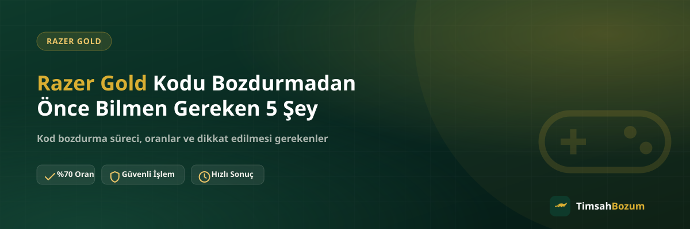

Elinde kullanmadığın bir Razer Gold kodu varsa ve bunu nakde çevirmeyi düşünüyorsan, işleme başlamadan önce bilmen gereken birkaç temel nokta var. Bu noktaları önceden bilmek hem işlemin ilk mesajdan itibaren hızlı ilerlemesini sağlar hem de karşılaşabileceğin yanlış beklentilerin önüne geçer. Aşağıda, Razer Gold kodu bozdurmadan önce aklında tutman gereken 5 önemli konuyu sırayla ele alıyoruz.
Neden Önceden Bilmek İşini Kolaylaştırır?
Razer Gold kodu, diğer bazı bozum hizmetlerinden farklı bir mantıkla çalışır. Bakiye tabanlı hizmetlerde esneklik daha fazla olsa da, kod tabanlı hizmetlerde işleyiş biraz daha nettir ve belirli kuralları vardır. Bu kuralları bilmeden işleme başlamak, "neden bu şekilde oluyor" sorularıyla süreci uzatabilir. Oysa aşağıdaki 5 noktayı baştan bilirsen, WhatsApp'tan yazdığın ilk mesajdan itibaren süreç net ve hızlı ilerler.
1. Kod Kullanılmış mı, Önce Bunu Kontrol Et
Bozum işlemine başlamadan önce yapman gereken ilk şey, kodun daha önce herhangi bir hesaba yüklenip kullanılmadığından emin olmak. Kullanılmış bir kodun değeri artık o hesabın bakiyesine dönüştüğü için, kodun kendisi üzerinden ayrıca bir bozum işlemi yapılamaz. Bu durum özellikle hediye olarak elden veya hediye kartı şeklinde gelen kodlarda sık karşılaşılan bir sürpriz olabiliyor; kartı sana verenin kodu daha önce denemiş olma ihtimali var. Paylaşmadan önce kodun hâlâ kullanılmamış olduğunu teyit etmen, sonradan yaşanacak bir hayal kırıklığını önler.
2. Kodun Tam Değeri Üzerinden Bozdurulduğunu Bil
Razer Gold kod tabanlı bir hizmettir; bu da bakiye tabanlı hizmetlerden (Pokus, Paycell, mobil ödeme gibi) temel bir farkı ortaya çıkarır. Bakiye tabanlı hizmetlerde bakiyenin bir kısmını bozdurup kalanını kendi hesabında bırakabilirsin, ama kod tabanlı hizmetlerde böyle bir seçenek yok. Kod, tek kullanımlık bir değeri temsil ettiği için bozum işlemi de kodun tam değeri üzerinden tek seferde gerçekleşir. "Kodumun yarısını bozdurup kalanını oyun hesabımda tutabilir miyim?" sorusunun cevabı bu yüzden hayırdır. İşleme başlamadan bu ayrımı bilmek, yanlış bir beklentiyle yazmanı önler.
3. Hangi Bilgileri Hazırda Bulundurmalısın
Süreci hızlandırmak istiyorsan, WhatsApp'a yazmadan önce kodun kendisini eksiksiz ve doğru şekilde hazırda tut. Kod karakterlerinin net görünmesi, mümkünse okunaklı bir fotoğraf veya ekran görüntüsü şeklinde elinde olması işlemi ilk mesajdan itibaren hızlandırır. Kodu yazarken bir karakteri eksik veya hatalı iletmek, doğrulama adımında gecikmeye yol açabilir. Kart üzerindeki kazıma alanının tamamen açıldığından ve kodun hiçbir karakterinin silinmediğinden de emin olmak faydalı olur.
4. Güncel Oranı İşlem Öncesi Nasıl Teyit Edersin
Sitede ve hizmet sayfalarında paylaşılan oran genel bir referans niteliğindedir; piyasa koşullarına göre güncellenebilir. Bu yüzden kodunu paylaşmadan önce, o anki geçerli oranı WhatsApp hattımızdan (+90 543 887 21 71) teyit etmen en sağlıklısı. Teyit ettiğin oranı not almak veya ekran görüntüsü olarak saklamak, işlem sırasında bir karışıklık yaşanmasını önler. Oranı sormak hiçbir taahhüt oluşturmaz; öğrendikten sonra işlemden vazgeçmekte her zaman serbestsin.
5. Kodunu Kimlerle Asla Paylaşmamalısın
Kod bilgini yalnızca resmi WhatsApp hattımız olan +90 543 887 21 71 üzerinden paylaş. Instagram DM'i, farklı bir telefon numarası veya "TimsahBozum" adını kullanan başka bir kanaldan gelen taleplere kod bilgini vermeden önce numarayı doğrula. Ayrıca bozum işlemi sana hiçbir zaman SMS doğrulama kodu sormaz; böyle bir istek gelirse bu dolandırıcılık şüphesi taşır ve işlemi durdurup resmi hattımızdan teyit etmen gerekir. Kodunu doğru hatta paylaşman, hem işlemin güvenliği hem de hızlı sonuçlanması için en önemli adımdır.
İşlem Sürecini Baştan Bilmek Ne Kazandırır?
Bu 5 noktayı bilerek işleme başladığında, WhatsApp'taki ilk mesajından itibaren süreç büyük ölçüde netleşir. Kodunun geçerli olduğundan eminsindir, tam değeri üzerinden bozdurulacağını bilirsin, oranı teyit etmeyi atlamazsın ve bilgini yalnızca doğru hatta paylaşırsın. Bu da hem senin hem de işlemi yürüten tarafın gereksiz soru-cevap turlarına girmeden, tek seferde net bir sonuca ulaşmasını sağlar.
Çalışma Saatleri ve Yanıt Süresi
TimsahBozum her gün 10:00 ile 03:00 arasında aktif olarak işlem yürütür. Bu saatler dışında gönderdiğin bir mesaj kaybolmaz, hat açıldığında sırasıyla yanıtlanır. Gece geç saatte yazıp hemen yanıt alamadığın için aynı mesajı tekrar tekrar göndermenin bir faydası olmaz, sırayı değiştirmez. Tek bir mesajda kodunu ve talebini net şekilde belirtmen, hat açıldığında sürecin hızlıca ilerlemesi için yeterlidir.
Üyelik veya Belge Gerekir mi?
Hayır, Razer Gold kodu bozdurmak için üyelik, form doldurma, kimlik belgesi veya hesabına erişim izni istenmez. Tek ihtiyacın, kodun kendisi ve WhatsApp üzerinden iletişim. Bu basitlik, işlemi hem senin hem de sürecin diğer tarafı için pratik hale getirir, ama aynı basitlik yüzünden resmi olmayan kanallardan gelen taleplere karşı da dikkatli olmanı gerektirir.
Birden Fazla Kodun Varsa Ne Yapmalısın?
Elinde tek bir kod yerine birden fazla Razer Gold kodu varsa, bunları tek tek ayrı mesajlarla göndermek yerine hepsini aynı mesajda toplu şekilde paylaşman süreci hızlandırır. Her kod kendi değeri üzerinden ayrı ayrı değerlendirilir, ama hepsinin bilgisini bir arada vermen hem senin hem karşındaki hattın işini kolaylaştırır. Kodları art arda ayrı mesajlarla göndermek sırayı değiştirmez, sadece konuşmayı gereksiz yere uzatır.
Hazır olduğunda Razer Gold bozdurma sayfamızdan güncel oranı görebilir, ardından WhatsApp hattımıza yazarak işlemini başlatabilirsin.
İlgili Yazılar
- Razer Gold Hediye Kartı Geldi, Ne Yapmalıyım?
- Razer Gold Kodu Bölgeye Özel mi? Bilmen Gerekenler
- Razer Gold Kodu Kullanılmışsa Ne Olur?